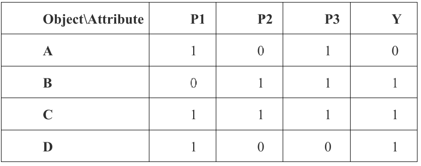
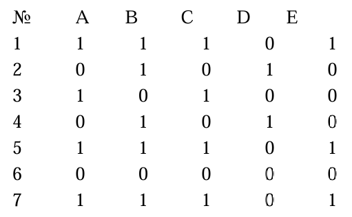
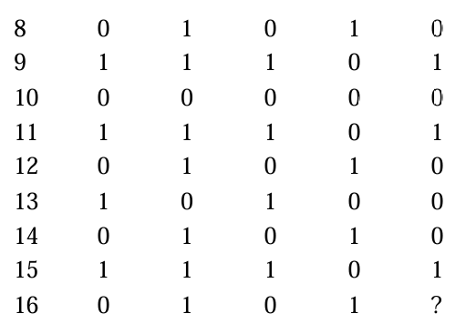
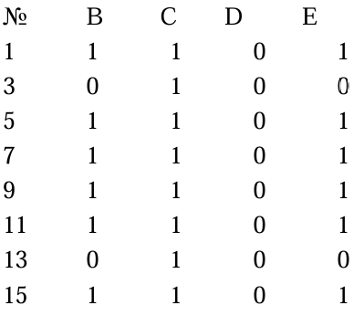
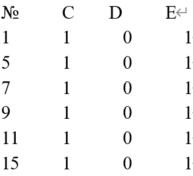
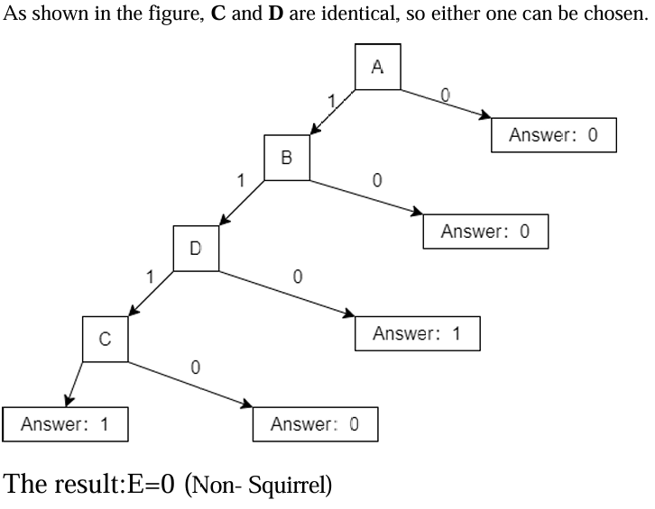

Practical Work Assignment 5
Overview:
Given a data table containing objects and attributes, select the optimal splitting feature by calculating the Gini impurity.
Task Requirements:
Calculate the Gini impurity for P1-P3 and select the optimal splitting feature.
Core Method:
Gini(D) = 1 - ∑(p_i²)- Calculate the probability distribution of feature values
- Calculate the conditional probability distribution
- Weighted calculation of Gini impurity

// P1 Calculation
P(Y=0|P1=0) = 0 → Gini(0)
P(Y=1|P1=0) = 1 → Gini(0)
Weighted Gini = (1/4)*0 + (3/4)*(1 - (1/3)² - (2/3)²) = 1/6
// P2 Calculation
P(Y=0|P2=0) = 0.5 → Gini(0.5)
Weighted Gini = (1/2)*0.5 + (1/2)*0 = 1/8
// P3 Calculation
Result same as P1 → Gini=1/6
Overview:
Based on the feature data of 15 animals, build a decision tree model to determine whether a new sample is a squirrel.
Task Requirements:
Calculate the Gini impurity for features A-D and build a decision tree model.
Implementation Steps:
- Calculate the Gini impurity for each feature
- Select the optimal splitting feature
- Recursively build the decision tree





/* First Split Calculation */
Gini(A) = 8/15*(1 - (3/4)² - (1/4)²) = 0.1
Gini(B) = 11/15*(1 - (6/11)² - (5/11)²) ≈ 0.1818
Gini(C) = 0.1, Gini(D) = 0.1